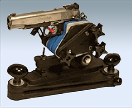
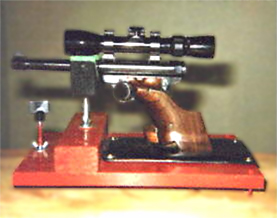
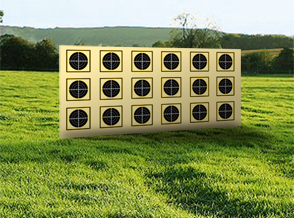
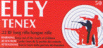
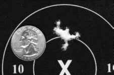
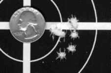
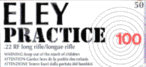
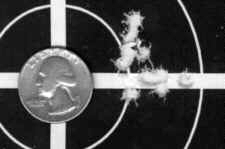
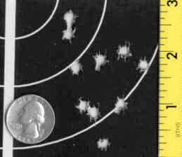

With the costs of .22 caliber ammunition always on the rise, it can be a real challenge to find a cartridge that performs exeptionally well and yet is still affordable for everyday use. There have been countless .22 caliber ammunition tests published in different shooting periodicals regarding accuracy and reliability of the entire spectrum of available products. Unfortunately, regardless of the testing controls or weapons utilized, these test reports are truly useless. There exists for every .22 caliber pistol, or barrel for that matter, a particular "diet" that is best for it. A particular round that performs incredibly well in one pistol may be incredibly bad in another.
The thing to do then is to conduct your own test and determine what works best in your pistol(s). I performed an enormous and highly successful test like this over a decade ago, and quickly decided what ammo I should be "feeding" my pistols. I would like to share my findings with you, but more important, based on my experiences, discuss the best procedures for doing such a test.
Selecting Ammunition to Test
Recognize that back in 1996 when I performed this experiment, the choices of .22 ammunition were quite different than those available today. Since then, new imports are available and several domestic ones have been discontinued. Therefore, keep in mind that my brand selections and test results will not have much validity in today's ammunition market.
If you are going to do this right, it is important to test every possible make and model of ammunition available within your price range. For my test, I created a list of what I called "medium-priced" cartridges available and went shopping for 50 rounds of each type. That not only meant excluding the the bulk pack bargain ammo, but also the super high-priced stuff as well. After one week of assembling this arsenal, I was satisfied with the diversity and price-range of ammunition that I had collected. It is pretty easy to build a test arsenal because the mail-order houses are willing to ship as few as 50 rounds of a particular product.
The chart on the left shows the cartridges that I had selected for testing back in 1996. On the right, I've listed the likely brands I would select if the test was being performed today. All listed with their cost per round at the time (case pricing):
|
|
The Test Environment and Establishing Controls

The most important thing that you must do is create a testing environment that protects the integrity of the data. That means that the exact identical conditions must exist for not only each ammunition, but for each shot fired as well. If there is a 25 mph wind blowing in varying directions, your test may not be conclusive. Also important is that you test the ammo performance at 50 yds., or the longest range you ever might fire.The most ideal environment would include the use of a machine rest, a gadget that almost eliminates the human factor in the testing. The Ransom International Master Series Rest, as shown on the right is, and has always been, the standard in bench accuracy testing for pistols. If, and only if, the rest is mounted properly and the pistol is secured and operated correctly, shot-to-shot conditions are almost identical. If one is not available, as in my own testing, an alternative system is to install a 6X or higher power telescopic sight upon your pistol, and fire from a secure, adjustable pistol rest.
It is foolish to think that you can get accurate results with a red dot sight, regardless of the size of its dot, or by resting the pistol on a sandbag! I must attest that you would be merely wasting your time, targets and ammunition.
 |
 |
| A pistol with telescope upon adjustable rest | The targets, each labeled with an ammo brand |
Conducting the Tests
Once your ammunition is selected and your test environment has been established, it is time to begin the fun. Because the exact conditions must exist for each ammunition brand, I suggest the following procedure for the testing of each:
The removal of all residue from the previously fired ammo brand is important. Many cartridges do not react well to a "foreign" substance in the bore, i.e. residual wax and lead of the prior brand, and produce unstable groups with random flyers. In other cases, the residue of the prior brand might actually make a cartridge perform better, another problem for data integrity.
Analyzing the Results
Finally, it is time to interpret your data. Keep in mind any notes that you took during the course of the testing. There were some surprises and disappointments when I studied the test targets. As I conducted the experiments twice, once for each of two pistols, I found that both pistols were very accurate, but highly ammunition-sensitive. A brand of round that performed well in one pistol sometimes was downright pathetic in the other.
Here's what I found when I analyzed the targets fired with my Smith & Wesson 7" Model 41 back in 1996...
 Although I consider it too expensive to use on a regular basis, Eley Tenex produced outstanding groups, averaging .825" with great consistency. |
 |
Within my price range, the clear winner was Federal Match. At 10.6 per round, it was the most expensive ammunition that I considered affordable for regular use. |
 |
 The big surprise of the test! This ammunition is by far the best value, with groups almost as tight as the Federal Match, but at half the cost. |
 |
The big disappointment of the test! This ammunition, while almost as expensive as the Federal Match, performed terribly. But then again, even though my pistols don't digest it well, it might perform superbly in someone else's. |
 |
Conclusions
Based on my interpretation of the test results, I decided back in 1996 to use the Eley Practice-100 as my regular ammunition, which I did for the next 14 years. The high availability and tremendous accuracy of this cartridge vs. its price made it the most attractive of the test group. Had it not been for my tests that day, I would have never considered it - due to friendly advice from fellow shooters to the contrary. Their favorite, the highly regarded CCI Standard Velocity performed worse than any other brand, with consistently large groups, some as large as 5 inches at 50 yards!
All in all, I feel that the amount of time and effort on the project was well worth it. And you probably will too.
However, a word to the wise! Before lumping out a fortune for a case of your newly discovered favorite, there is another key factor for consideration. Will the cartridge function flawlessly through the pistol's action?! Some cartridges have a wax coating that hardens in cold weather. Others have long dimensions that will not chamber fully. With your leftover cartridges from the accuracy test, fire a few strings of rapid fire in natural conditions and rule out function problems.